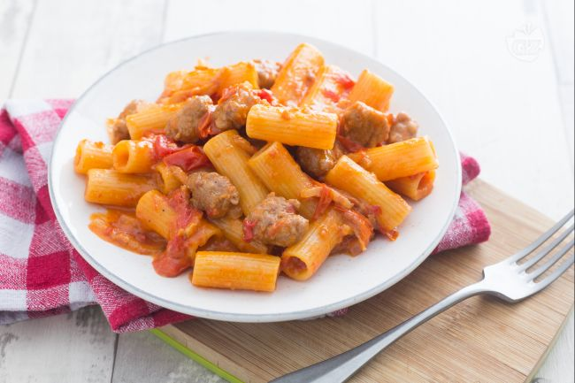

Matteo Emanuele Russo
Hobby
Cibo Preferito
STRONG
Emphasized
Underlined
vado a capo con br
I miei film preferiti
- Il silenzio degli innocenti
- Il signore degli anelli - La compagnia dell'anello
- Il signore degli anelli - Le due torri
- Il signore degli anelli - Il ritorno del re
- Inception
Pasta alla zozzona
Ricetta qui

- Mettere a bollire l'acqua per la cottura della pasta e salate al bollore.
- Prendete il guanciale, affettatelo e ricavate delle striscioline.
- Poi private la salsiccia del budellom quindi tagliatela a tocchetti.
- Versate un filo d'olio in un tegame e unite la salsiccia e il guanciale.
- lasciandoli rosolare per circa 15 minuti a fuoco medio-basso, mescolando di tanto in tanto.
- Quando saranno ben rosolati, versate anche i pomodorini nel condimento 8 e lasciate cuocere altri 10 minuti con il coperchio.
- In una ciotolina versate i tuorli e 60 g di Pecorino romano grattugiato. Amalgamateli bene per creare una cremina.
- Lessate la pasta quindi unite un mestolo di acqua di cottura nella crema con tuorli e Pecorino per allentare la crema ottenuta.
- Scolate la pasta al dente, versatela nel tegame con il condimento, mescolate bene e togliete dal fuoco.
- Versate anche la crema di Pecorino e tuorli, amalgamate e terminate la mantecatura con aggiunta di altri 40 g circa di Pecorino prima di servire la vostra pasta alla zozzona!
Vai su Google